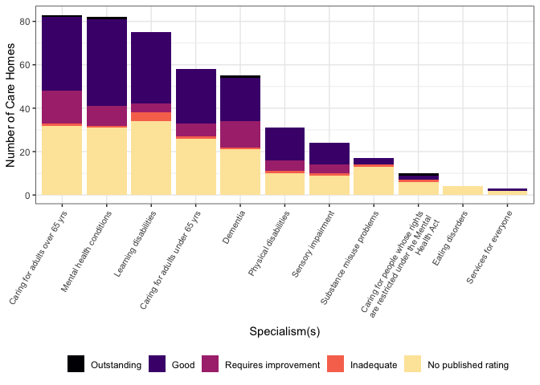

Get data from the Care Quality Commission API
Access data from the ‘Care Quality Commission’, the health and adult social care regulator for England. The ‘Care Quality Commission’ operates an API, with data available under the Open Government License. Data includes information on service providers, locations such as hospitals, care homes and medical clinics, and ratings and inspection reports.
Installation
The package is available on CRAN, and can be installed with:
To install the development version from GitHub use:
library(cqcr) library(purrr) library(dplyr) #> #> Attaching package: 'dplyr' #> The following objects are masked from 'package:stats': #> #> filter, lag #> The following objects are masked from 'package:base': #> #> intersect, setdiff, setequal, union library(ggplot2) library(forcats)
loc1 <- cqc_locations_search(care_home = TRUE, local_authority = c("Waltham Forest", "Hackney", "Tower Hamlets")) care_home_details <- cqc_location_details(loc1) care_home_df <- map_dfr(care_home_details, `[`, c("location_id", "name", "number_of_beds", "onspd_longitude", "onspd_latitude")) care_home_df <- care_home_df %>% mutate(rating = care_home_details %>% map(c("current_ratings", "overall", "rating")) %>% as.character(), rating = recode(rating, "NULL" = "No published rating"), rating = factor(rating, levels = c("Outstanding", "Good", "Requires improvement", "Inadequate", "No published rating")), report_date = care_home_details %>% map(c("current_ratings", "reportDate")) %>% as.character(), report_date = ifelse(report_date == "NULL", NA, report_date), specialisms = care_home_details %>% map(c("specialisms", "name")))
care_home_df_unnest <- tidyr::unnest(care_home_df, cols = c(specialisms)) %>% mutate(specialisms = fct_infreq(specialisms)) theme_set(theme_bw()) ggplot(care_home_df_unnest, aes(x = specialisms, fill = rating)) + geom_bar() + scale_x_discrete(labels = scales::wrap_format(33)) + scale_fill_viridis_d(name="", option = "A", end = 0.95) + labs(x = "Specialism(s)", y = "Number of Care Homes") + theme(legend.position = "bottom", axis.text.x = element_text(size = 8, angle = 60, hjust = 1))

Citing cqcr
Odell E (2019). cqcr: Access ‘Care Quality Commission’ Data. doi: 10.5281/zenodo.3452020, R package version 0.1.3, URL: https://github.com/evanodell/cqcr.
A BibTeX entry for LaTeX users is
@Manual{,
title = {{cqcr}: Access 'Care Quality Commission' Data},
author = {Evan Odell},
doi = {10.5281/zenodo.3452020},
year = {2019},
note = {R package version 0.1.3},
url = {https://github.com/evanodell/cqcr},
}Notes
This package is not affiliated with or supported by the Care Quality Commission.
Please note that the ‘cqcr’ project is released with a Contributor Code of Conduct. By contributing to this project, you agree to abide by its terms.